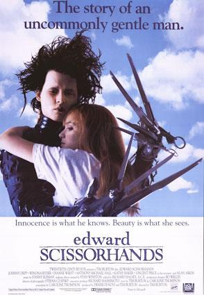

Antes de dormir, uma garotinha pergunta à sua avó como surgiu a neve. A idosa começa então a contar a história de Edward, um rapaz com tesouras no lugar das mãos que vivia sozinho numa mansão sombria no topo de uma colina próxima. Ele foi criado por um inventor que morreu antes de lhe conceder mãos humanas. Certo dia, Peg Boggs, uma atenciosa vendedora local da Avon, vai à mansão, encontrando Edward e um jardim repleto de belas topiárias. Compadecida com a situação do rapaz, ela decide levá-lo para passar um tempo na casa dela com sua família.